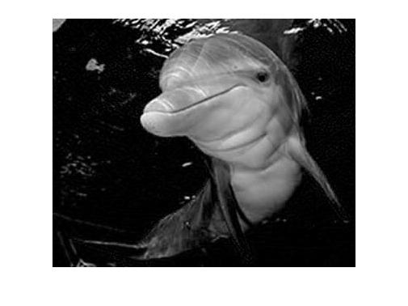
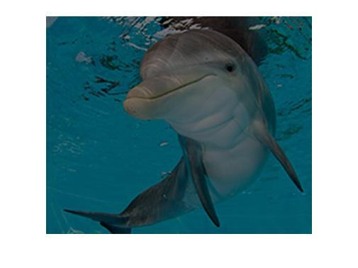
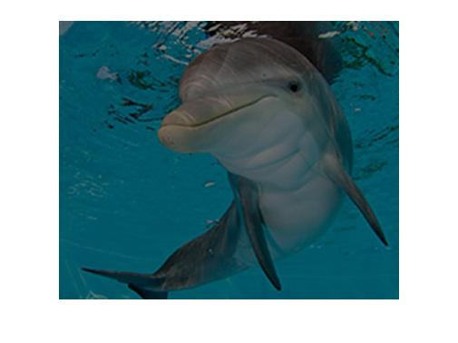

Hello World
# This will get executed each time the exercise gets initialized
b = 6
# Create a variable a, equal to 5
# Print out a
# Create a variable a, equal to 5
a <- 5
# Print out a
print(a)
test_object("a")
test_function("print")
success_msg("Great job!")
Use the assignment operator (
<-) to create the variable a.
# This will get executed each time the exercise gets initialized
b = 6
# Create a variable a, equal to 5
# Print out a
那兩張圖片來學習：
第一張為影相切割
img = imread('dolphin.jpg'); imshow(img); disp(size(img)); % check size cropped = img(110:150, 10:110, 3); imshow(cropped);

第二個例子為黑白影像。
img = imread('dolphin.jpg'); imshow(img); disp(size(img)); img_red = img(:,:,1); imshow(img_red); disp(size(img_red)); plot(img_red(150,:));以上為程式碼
完成的作品為： 
第三個專案為利用係屬與影像矩陣相乘，行成淡深的差別:
%Multiply by scalar demo dolphin = imread('dolphin.jpg'); dark = 0.5 * dolphin; bright= 1.5 * dolphin; imshow(dark) imshow(bright)
完成的作品為：
 

第四個專案是影相重疊：
% Average image of two images dolphin = imread('dolphin.jpg'); underwater = imread('underwater.jpg'); result = 0.5 * dolphin + 0.5 * underwater; imshow(result)
完成的作品為：